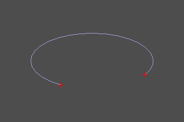
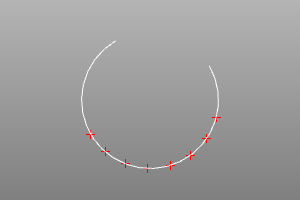

Анализ кривых
Теоретическая сводка.
Общепризнанным методом задания кривых в системах вычислительной геометрии является параметрический метод.
Согласно ему кривая задана непрерывным отображением скалярного множества [U_min, U_max] на пространство заданной мерности. P = F(U) : P ∈ R^N, U ∈ R^1[U_min, U_max], где F - функтор отображения, а N - мерность пространства.
На практике это означает, что любая точка P на кривой имеет соответствующее ей значение скалярного параметра U. Следует понимать, что в общем случае функция связывающая параметр U в точке P и длину кривой из точки начала O до точки P не линейна. Поэтому вычисления над кривой в терминах длин требуют применения специального математического аппарата (реализованного в виде методов настоящей библиотеки).
Классы кривых.
В ZenCad существуют следующие классы реализующие методы анализа кривых:
- Edge (порождается инструментами segment, interpolate, bezier, bspline и т.д.)
- Curve
- Curve2
Крайние точки и диапазон конечной кривой.
Определение концевых точек конечных кривых.
Метод endpoints возвращает объекты крайних точек. Параметры этих точек могут быть запрошены методом range.
curve.endpoints() # -> tuple[Point3, Point3]
curve.range() # -> Interval; .lower/.upper -> Scalar
crv = circle(r=5, wire=True, angle=deg(270))
s,f = crv.endpoints()
disp([crv, s, f])

curve.d0(u)
Вернуть точку, соответствующую параметру u.
curve.d1(u)
Вернуть вектор первой производной, соответствующие параметру u.
curve.lowerdistanceparameter(pnt)
Вернуть параметр, соответствующий точке кривой наиболее близкой к точке pnt.
Равнораспределённые точки кривой.
Вернуть массив точек, равномерно распределённых на кривой. Параметр npnts - задаёт количество точек. Количество точек должно быть целым числом не меньше двух. Обе границы диапазона задаются вместе или обе опускаются; результат включает его концы. Равномерность относится к длине вдоль кривой, а не к параметру. Параметры umin, umax задают диапазон на множестве параметров в котором будет проведена процедура распределения.
curve.uniform(npnts, U_min, U_max) # -> list[Scalar]
curve.uniform_points(npnts, U_min, U_max) # -> list[Point3]
crv = circle(r=5, wire=True, angle=deg(270))
params = crv.uniform(8, math.pi/4, math.pi)
print([float(p) for p in params]) # [0.7853981633974483, 1.121997376282069, 1.4585965891666897, 1.7951958020513104, 2.131795014935931, 2.4683942278205517, 2.8049934407051724, 3.141592653589793]
pnts = crv.uniform_points(8, math.pi/4, math.pi)
disp(pnts + [crv])

Двумерные кривые
У Curve2 свой интерфейс: point(u) возвращает Point2, tangent(u) — Vector2 первой производной, range() — Interval. Для ограничения диапазона используйте trim(start, end). Методы d0, d1, endpoints и uniform_points, описанные выше для Edge и Curve, не входят в интерфейс Curve2.
from zencad import *
curve2 = segment2(point2(0, 0), point2(10, 0))
interval = curve2.range()
start = curve2.point(interval.lower)
end = curve2.point(interval.upper)
assert float(start.x) == 0
assert float(end.x) == 10
assert isinstance(curve2.tangent(interval.lower), Vector2)